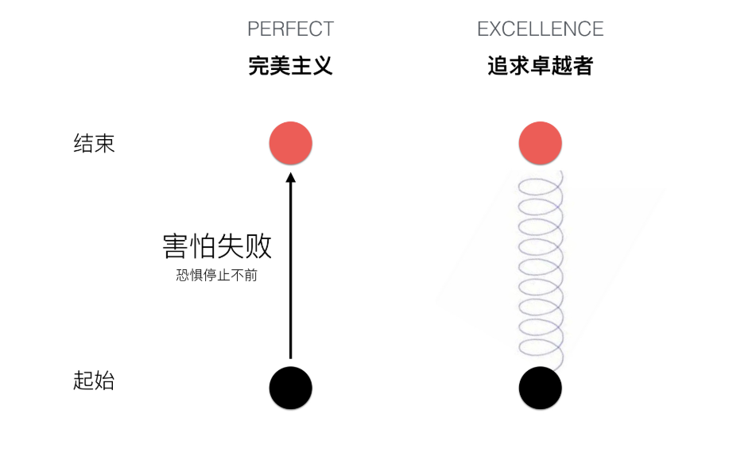

文章目录

简介
本文通过训练词向量的方式试图解释一些心理学现象. 在实验之前, 我并没有太多的想法和对结果的预期, 只是抱着试试看的态度来的. 不过最终看效果, 还是蛮有意思的. 对代码不感兴趣的人可以直接跳过代码部分, 直接看结果展示部分.
技术路线
本次实验是前两次实验的继承, 前两篇分别是<中文语料库的构建>和<爬去知网期刊论文信息和摘要信息>. 具体过程如下:
- 这次实验的语料来自知网论文的摘要, 爬取了大概有7000篇论文摘要(搜索关键词有完美主义, 幸福, 自卑等, 还有一些无关词语).
- 然后构建了一个中文语料库.
- 使用pyltp进行了分句和分词
- 使用gensim进行词向量的训练
代码部分
这是构建语料库的类
1 | # author: mlln.cn |
实例化一个语料库
1 | dpath = r'D:\mysites\cnki-search\OUTPUTS' |
输出:
47345
保存分词结果
1 | # 保存tokens |
训练词向量
1 | from gensim.models.word2vec import Word2Vec |
输出:
(2390588, 3090228)
保存词向量模型
1 | model_path = r"D:\mysites\cnki-search\OUTPUTS\vector.model" |
结果展示
用100维向量表示一个词
1 | model['基于'] |
输出:
d:\mysites\deeplearning.ai-master\.env\lib\site-packages\ipykernel_launcher.py:1: DeprecationWarning: Call to deprecated `__getitem__` (Method will be removed in 4.0.0, use self.wv.__getitem__() instead).
"""Entry point for launching an IPython kernel.
输出:
array([ 0.20481601, 0.5714214 , -1.3871742 , 0.06323086, -0.9507892 ,
0.74798256, -0.7659924 , 1.5762316 , -0.48113433, -0.47097418,
-0.26745576, 0.27904513, -0.3113326 , -0.14472784, -0.5994872 ,
-0.04263587, -1.0676603 , -0.3256847 , 0.15162984, -0.04746385,
-0.67858386, 0.06392714, -0.65016 , -0.21514435, -0.7567799 ,
0.2408507 , -0.8350066 , -0.44951594, 0.17692119, -0.32248417,
-0.5894241 , -0.39148644, -0.2975546 , 0.16461797, -0.30091375,
-0.43784717, 0.31717032, 0.4437195 , -0.9399812 , -0.22935824,
0.17857902, 0.95873344, 0.5222857 , 0.36783326, -0.00854115,
-1.5987526 , 0.00588302, 0.13465759, 0.7462688 , 0.54626375,
-0.36806348, 0.92049253, -0.05161149, -0.77675563, 0.36425716,
-0.5438 , -0.32902893, 0.02579404, 0.52441996, -0.31838223,
-0.02959022, -0.9052237 , -0.24905084, -0.4933001 , -0.05206076,
-0.30906802, 0.5123301 , -0.7087073 , 0.08212207, -0.80762994,
0.08510961, 0.2877228 , -1.2759535 , 1.4057134 , 0.56749785,
-1.0927128 , 0.30251205, -0.513295 , 0.18849482, -1.0221461 ,
-0.07769577, 1.0415772 , -0.60217077, -0.25533095, 0.55302244,
0.6333061 , 0.41302222, 0.46321914, -1.2012811 , -0.1631474 ,
0.5391119 , -0.08092288, -0.26842424, 0.14027756, 0.88385963,
0.05708294, -0.629938 , -1.2831743 , -0.16318122, -0.51519424],
dtype=float32)
找到最相近的n个词
1 | model.most_similar(['我']) |
输出:
d:\mysites\deeplearning.ai-master\.env\lib\site-packages\ipykernel_launcher.py:1: DeprecationWarning: Call to deprecated `most_similar` (Method will be removed in 4.0.0, use self.wv.most_similar() instead).
"""Entry point for launching an IPython kernel.
输出:
[('他', 0.8343698382377625),
('善', 0.8118964433670044),
('你', 0.7913036942481995),
('大人', 0.7887542247772217),
('作家', 0.7695958018302917),
('五四', 0.7694318294525146),
('童年', 0.76503586769104),
('她', 0.7642527222633362),
('说', 0.7629194259643555),
('至善', 0.7568099498748779)]
概念间的计算
找到没有自尊的完美主义者:
1 | v = model['完美主义'] - model['自尊'] |
输出:
d:\mysites\deeplearning.ai-master\.env\lib\site-packages\ipykernel_launcher.py:1: DeprecationWarning: Call to deprecated `__getitem__` (Method will be removed in 4.0.0, use self.wv.__getitem__() instead).
"""Entry point for launching an IPython kernel.
d:\mysites\deeplearning.ai-master\.env\lib\site-packages\ipykernel_launcher.py:2: DeprecationWarning: Call to deprecated `most_similar` (Method will be removed in 4.0.0, use self.wv.most_similar() instead).
输出:
[('完美主义', 0.7952172756195068),
('meta', 0.4440059959888458),
('定式', 0.4229651689529419),
('幸福观', 0.42237338423728943),
('感性认识', 0.4190525710582733),
('人格', 0.3875422179698944),
('犯罪', 0.36745792627334595),
('自我', 0.3505035638809204),
('拖延', 0.3485129177570343),
('历时性', 0.345354288816452)]
寻找概念间的关系
1 |
|
输出:
d:\mysites\deeplearning.ai-master\.env\lib\site-packages\ipykernel_launcher.py:2: DeprecationWarning: Call to deprecated `most_similar` (Method will be removed in 4.0.0, use self.wv.most_similar() instead).
输出:
[('自尊', 0.8451846837997437),
('倾向', 0.8100054860115051),
('反刍', 0.7790679931640625),
('特质', 0.7788870334625244),
('自悯', 0.7783106565475464),
('情绪', 0.7755159139633179),
('自卑感', 0.7730893492698669),
('态度', 0.7722681760787964),
('自杀', 0.7719931602478027),
('拖延', 0.7688606381416321),
('适应性', 0.761386513710022),
('抑郁', 0.7555066347122192),
('人格', 0.7441696524620056),
('学业', 0.7429016828536987),
('强迫', 0.7383431792259216),
('风格', 0.734379768371582),
('信念', 0.732912540435791),
('完美主义者', 0.731903612613678),
('外表', 0.720329225063324),
('显', 0.7195327281951904)]
1 | model.most_similar(positive=['完美主义', '幸福'], negative=[], topn=20) |
输出:
d:\mysites\deeplearning.ai-master\.env\lib\site-packages\ipykernel_launcher.py:1: DeprecationWarning: Call to deprecated `most_similar` (Method will be removed in 4.0.0, use self.wv.most_similar() instead).
"""Entry point for launching an IPython kernel.
输出:
[('幸福感', 0.6743337512016296),
('幸福观', 0.6489542722702026),
('自卑感', 0.6120619177818298),
('自我', 0.607430100440979),
('婚恋观', 0.5844637155532837),
('自我批评', 0.5719105005264282),
('自然界', 0.5718179941177368),
('幸福度', 0.5650844573974609),
('阶级性', 0.5615861415863037),
('自尊', 0.5536830425262451),
('追求', 0.5530370473861694),
('个人', 0.5523806214332581),
('整饰', 0.547888457775116),
('人格', 0.5456241369247437),
('畅爽', 0.5450509190559387),
('信仰', 0.5448511838912964),
('世界观', 0.5446830987930298),
('人生观', 0.542322039604187),
('金钱观', 0.5381442308425903),
('优越感', 0.5363531112670898)]
1 | model.most_similar(positive=['完美主义'], negative=['卓越'], topn=20) |
输出:
d:\mysites\deeplearning.ai-master\.env\lib\site-packages\ipykernel_launcher.py:1: DeprecationWarning: Call to deprecated `most_similar` (Method will be removed in 4.0.0, use self.wv.most_similar() instead).
"""Entry point for launching an IPython kernel.
输出:
[('感性认识', 0.5076549053192139),
('自信感', 0.4832497835159302),
('定式', 0.43401259183883667),
('拖延三者', 0.4103550910949707),
('差异.', 0.4100268483161926),
('回归法', 0.4001217484474182),
('变量', 0.38459616899490356),
('6-12', 0.36245742440223694),
('拖延', 0.34290611743927),
('meta', 0.33427050709724426),
('流利', 0.3265514373779297),
('产后', 0.32360613346099854),
('结果', 0.30865421891212463),
('预调查', 0.30783766508102417),
('政界', 0.30159276723861694),
('488', 0.2899872660636902),
('指导语', 0.28705894947052),
('318', 0.28507083654403687),
('1986', 0.2814595699310303),
('因子', 0.280342698097229)]
1 | model.most_similar(positive=['完美主义', '成功'], negative=[], topn=20) |
输出:
d:\mysites\deeplearning.ai-master\.env\lib\site-packages\ipykernel_launcher.py:1: DeprecationWarning: Call to deprecated `most_similar` (Method will be removed in 4.0.0, use self.wv.most_similar() instead).
"""Entry point for launching an IPython kernel.
输出:
[('成就', 0.7487295269966125),
('自我', 0.7096918225288391),
('乐观', 0.7087293863296509),
('自尊', 0.6956290006637573),
('积极', 0.6946340799331665),
('依赖', 0.6929352283477783),
('归因', 0.6833783388137817),
('倾向', 0.6816843748092651),
('保存', 0.6750534772872925),
('自信', 0.6739674806594849),
('创造力', 0.6691659688949585),
('倦怠', 0.6682588458061218),
('生涯', 0.663487434387207),
('兴趣', 0.6600993871688843),
('创造性', 0.6511282324790955),
('效能', 0.6472607851028442),
('成功感', 0.6456454992294312),
('能力', 0.6446733474731445),
('定向', 0.6438237428665161),
('反刍', 0.6435714364051819)]
1 | model.most_similar(positive=['完美主义', '失败'], negative=[], topn=20) |
输出:
d:\mysites\deeplearning.ai-master\.env\lib\site-packages\ipykernel_launcher.py:1: DeprecationWarning: Call to deprecated `most_similar` (Method will be removed in 4.0.0, use self.wv.most_similar() instead).
"""Entry point for launching an IPython kernel.
输出:
[('自尊', 0.8850756287574768),
('倾向', 0.8513725996017456),
('自悯', 0.8307703733444214),
('成就', 0.8234578371047974),
('消极', 0.8121293783187866),
('学业', 0.8060901165008545),
('抑郁', 0.8046209812164307),
('回避', 0.804327130317688),
('归因', 0.8038434982299805),
('强迫', 0.8031525611877441),
('信念', 0.7968993186950684),
('拖延', 0.7954033017158508),
('情绪', 0.7894195318222046),
('知觉', 0.7877265810966492),
('风格', 0.7872787714004517),
('适应性', 0.785957932472229),
('神经质', 0.7785789370536804),
('反刍', 0.7781296372413635),
('苦恼', 0.7760308384895325),
('自卑感', 0.7698969841003418)]
视频演示
注意
本文由jupyter notebook转换而来, 您可以在这里下载notebook.ipynb)
有问题可以直接在下方留言
或者给我发邮件675495787[at]qq.com
请记住我的网址: mlln.cn 或者 jupyter.cn